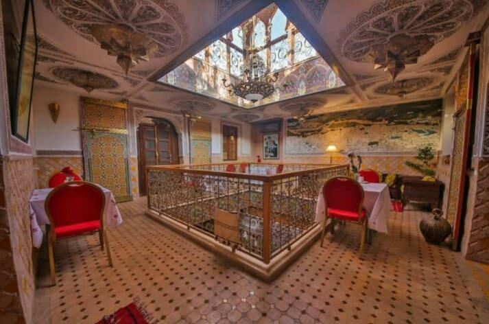
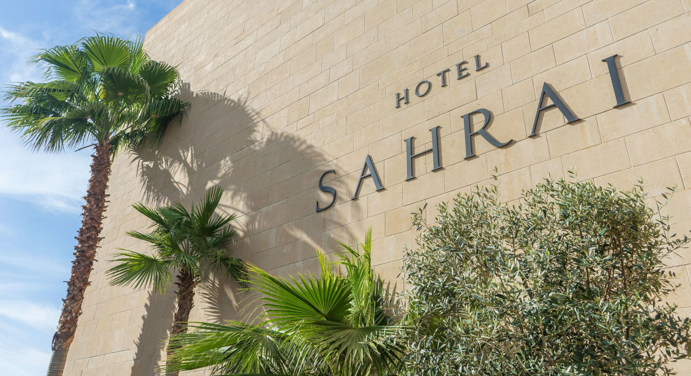
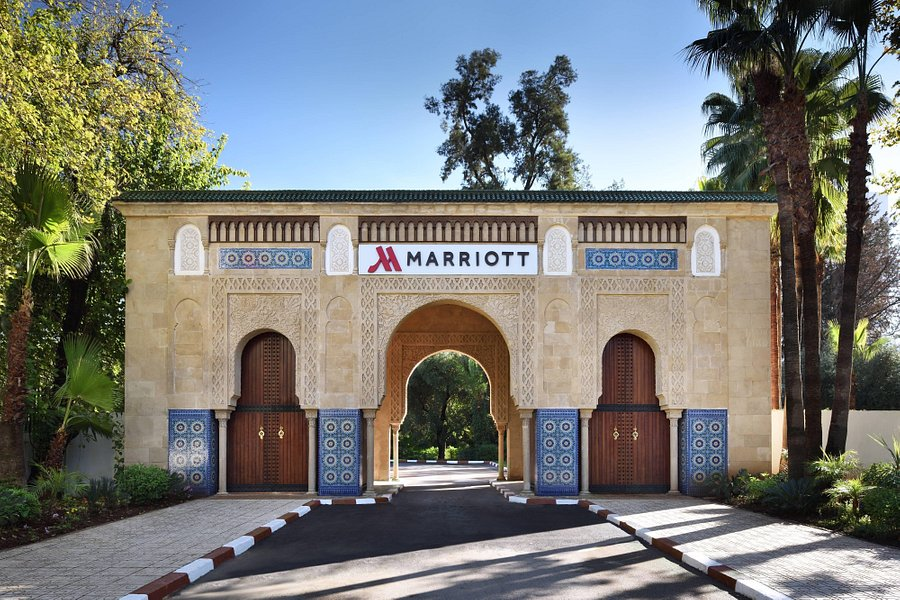
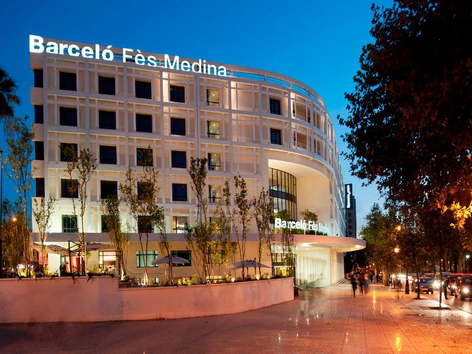

La ville de Fez compte de nombreux hôtels haut de gamme et la plupart d'entre eux sont concentrés au cœur de la ville
L'un des hôtels les plus vendus à Fès au Maroc, il propose un restaurant, une réception ouverte 24h/24, un service d'étage, une connexion Wi-Fi gratuite et des chambres familiales. Il est situé à 53 m de la place Batha et à 16,4 km de l'aéroport de Fès-Sais.